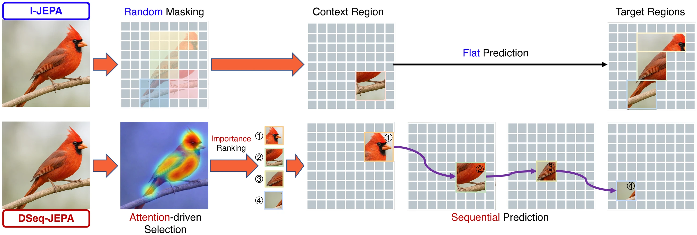
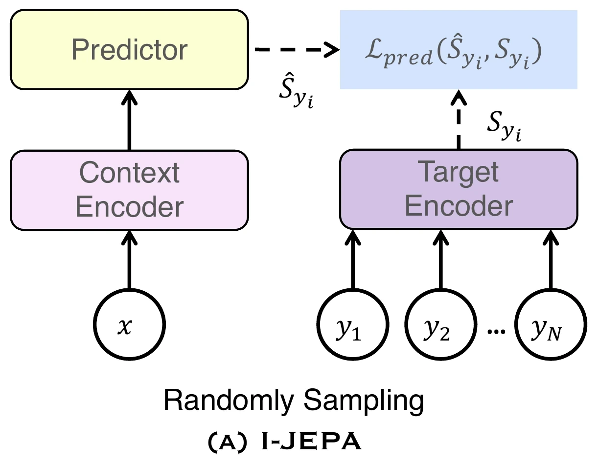
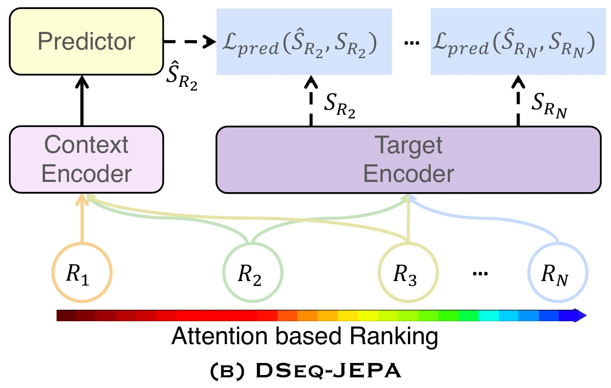
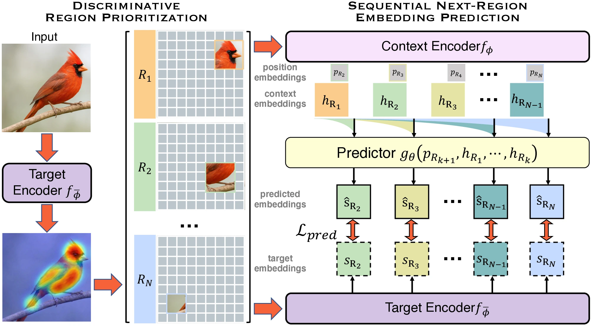
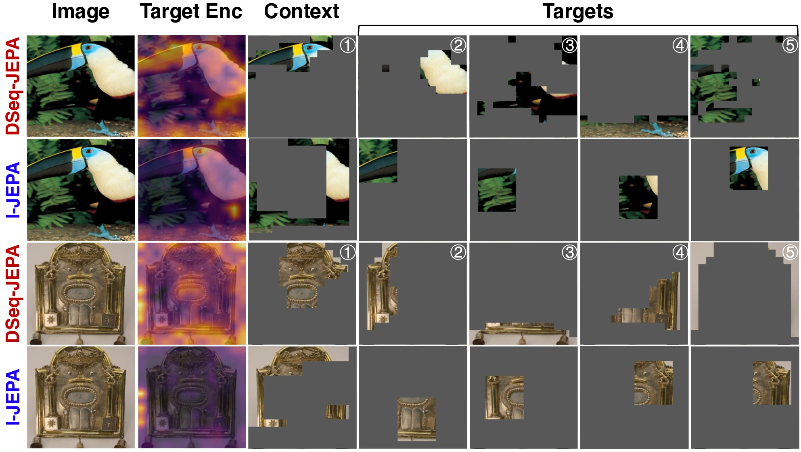
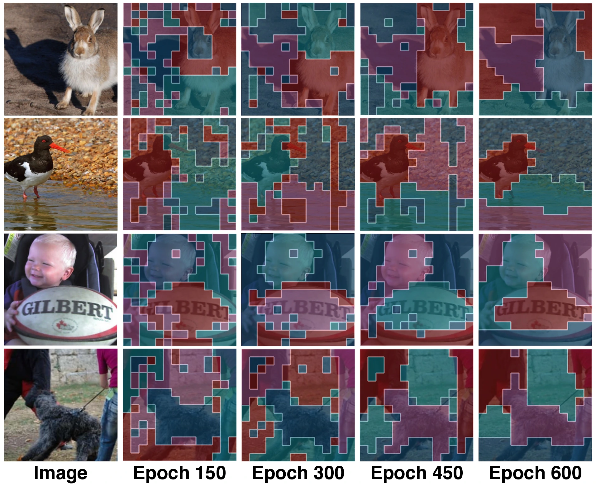

Discriminative Region Prioritization
Attention-derived saliency identifies informative regions and ranks them by visual importance.
Accepted at ECCV 2026 Main Conference
A JEPA-style self-supervised learner that decides where to predict and in what order, turning latent prediction into a curriculum from primary to secondary visual cues.
* Equal contribution

Abstract


Recent advances in self-supervised visual representation learning have demonstrated the effectiveness of predictive latent-space objectives for learning transferable features. In particular, Image-based Joint-Embedding Predictive Architecture (I-JEPA) learns representations by predicting latent embeddings of masked target regions from visible context. However, it predicts target regions in parallel and all at once, lacking ability to order predictions meaningfully.
Inspired by human visual perception, which attends selectively and progressively from primary to secondary cues, we propose DSeq-JEPA, a Discriminative Sequential Joint-Embedding Predictive Architecture that bridges latent predictive and autoregressive self-supervised learning. DSeq-JEPA identifies primary discriminative regions using an attention-derived saliency map and predicts subsequent regions in discriminative order, inducing a curriculum-like semantic progression during pre-training.
Attention-derived saliency identifies informative regions and ranks them by visual importance.
The predictor estimates each next region embedding from previous discriminative cues.
Improvements hold across ImageNet, FGVC, dense prediction, CLEVR, and ablation settings.
Method
DSeq-JEPA keeps the JEPA latent prediction objective while replacing random parallel target prediction with an attention-guided sequence. It follows the intuition of selective human visual perception: identify the most discriminative visual cue first, then use that context to predict progressively less dominant regions.

Compute class-token to patch similarity from the target encoder as a lightweight proxy for discriminative visual content.
Apply adaptive thresholding and connected components, then sort candidate regions by average normalized attention response.
Predict region embeddings from the most discriminative cue to the least, aligning predictions with target encoder features.
Results
The improvements are not isolated to one benchmark: sequential discriminative prediction transfers to global, fine-grained, dense, and low-level tasks.
Top-1 accuracy using ViT-H/16 at 448px, comparing I-JEPA and DSeq-JEPA.
Visual Analysis
Qualitative analysis shows compact discriminative regions and patch clusters that become increasingly object-aligned over training.


Citation
Use this BibTeX entry for the ECCV 2026 version of the paper.
@inproceedings{he2026dseqjepa,
title={DSeq-JEPA: Discriminative Sequential Joint-Embedding Predictive Architecture},
author={He, Xiangteng and Sakai, Shunsuke and Chandhok, Shivam and Beery, Sara and Yuan, Kun and Padoy, Nicolas and Hasegawa, Tatsuhito and Sigal, Leonid},
booktitle={Proceedings of the European Conference on Computer Vision (ECCV)},
year={2026}
}